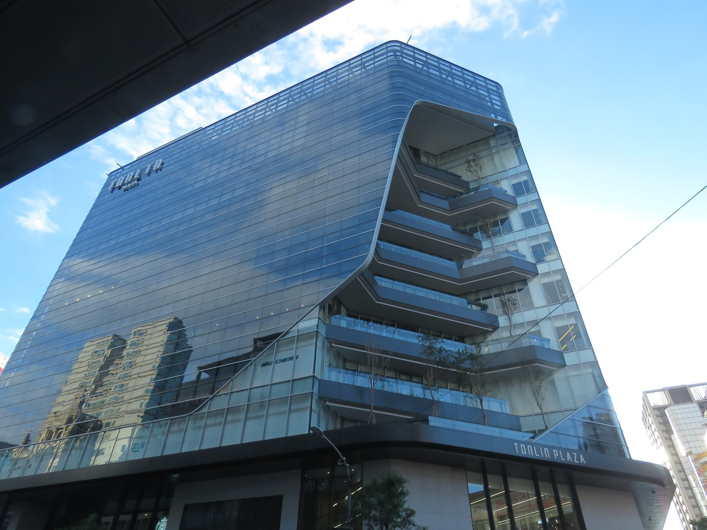
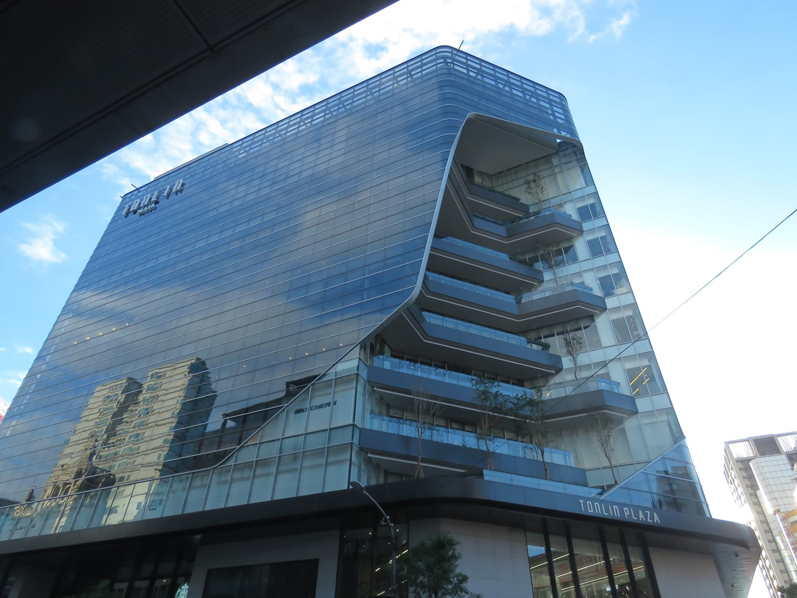

1895年進入日本統治台灣的時期後，直到1901(明治34)年今桃園區隸屬於臺北縣，1901 (明治34)年，臺灣總督府廢縣置廳，將臺灣劃分為20個廳，今桃園市大部分地區隸屬桃仔園廳，桃仔園廳又下轄大嵙崁、三角湧、大坵園、楊梅壢、鹹菜硼、中壢等6個支廳。1905年4月，桃仔園廳改稱桃園廳。1909年10月，台灣的行政區劃由12廳改制為20廳，而桃園廳的行政區劃照舊。
日本人治理今桃園區所依循著的發展路線是廟後商業、廟前行政、站後工業。
大約是1904年時桃園古城被拆，日本人開始發展「桃園驛前通」一帶的建設，也就是從景福宮到桃園車站一帶，此後今桃園區這一帶內的新式建築逐漸興起，
1904起開始設置了「桃園廳舍」建築，1922年桃園廳舍被重建為桃園郡役所，1945年成為新竹縣政府辦公樓，1950年成為桃園縣政府辦公樓，1983年搬遷至新規劃的縣府路行政園區，後來原址上的建物被改建成為遠東百貨大樓，1984年11月開業。
今中正路上麥當勞的位置，原有日治時期桃園街役場建築，1945年12月成為桃園鎮公所，1971年4月21日，成為桃園縣桃園市公公所。1983年搬遷至新規劃的縣府路行政園區。
今中正路上統領百貨的原址，1902年起是桃仔園小學校的位置，1945年廢校，1995年起今統領百貨桃園店開幕。
今中華路/民權路路口的合作金庫的原址，日治時期是桃園武德殿建築。
今復興路上桃園市新住民文化會館的原址，日治時期是東本願寺建築。

 
